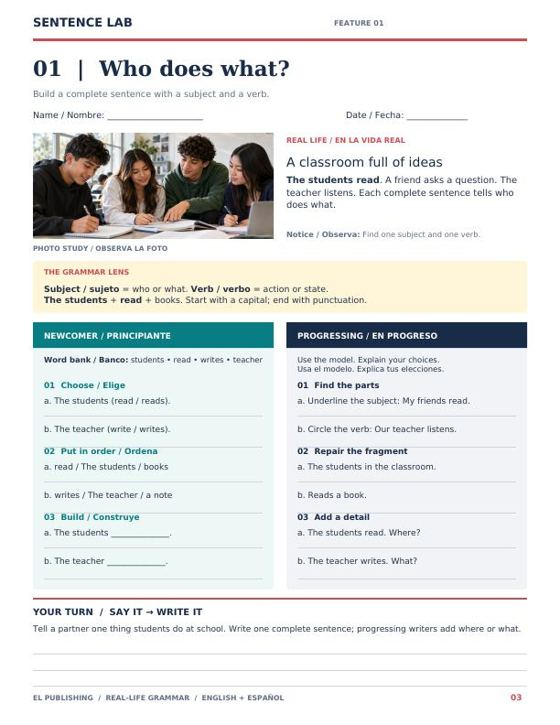
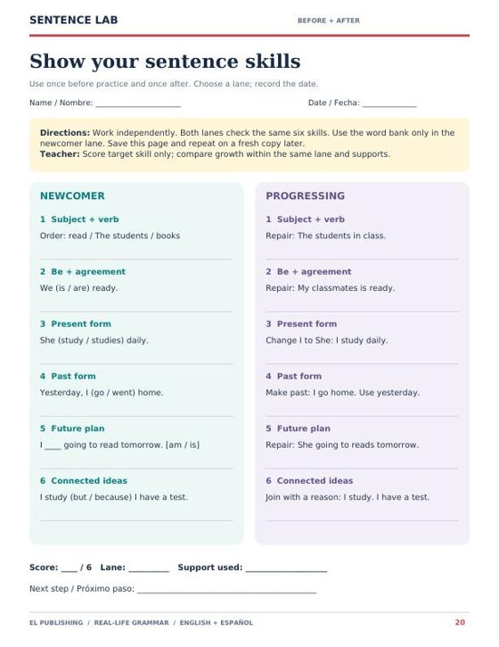

Start here
Your words. Your world.
A grammar packet built the way a magazine is built: a photo, a short scene, one grammar lens, and then practice at two levels.
Every feature in Sentence Lab opens with a photo study and a three-sentence real-life scene — a classroom full of ideas, a team practicing after school, a new student finding the library. The target form is in bold inside the scene, so students see the grammar working before they are asked to produce it. A Grammar Lens box gives the rule in one or two lines, in English with the Spanish term beside it. Then two practice columns sit side by side: Newcomer / Principiante and Progressing / En progreso. Every page ends with Your Turn: Say it → Write it, a partner task that goes from speech to one written sentence.
Same grammar goal. Different language supports. A newcomer and a progressing student work on the same page, on the same form, in the same twenty minutes — one with a word bank and models, the other with repair, expansion and independent writing. Nobody gets an easier objective; they get a different path to it.
Page 2
A 20–30 minute routine
The packet runs on one routine, so after the first feature students know what comes next.
- Notice3 min Observe the photo. Read the feature scene and the model aloud.
- Model4 min Build one example together; point to the subject and the verb.
- Practice8–12 min Students use either lane; change lanes as needed.
- Talk3–4 min Partners rehearse the shared task before writing.
- Check2–3 min Review one sentence; give one specific next step.
Read prompts aloud. Let students point, gesture, or rehearse in Spanish before saying the English sentence. Newcomers may dictate first, then copy and revise. Progressing students explain a choice and add meaningful details. A student may need different lanes for different skills — that is the design, not an exception.
Differentiation
Two lanes, one page
What each lane asks for, feature after feature.
Newcomer / Principiante
- A word bank (Banco) at the top of the column
- Choose / Elige — pick the correct form from two
- Put in order, Replace, or Complete — guided production
- Build / Construye — finish a sentence frame
- Bilingual task labels on every item
Progressing / En progreso
- “Use the model. Explain your choices.”
- Find the parts — underline the subject, circle the verb
- Repair — fix a fragment, a run-on, or wrong agreement
- Add a detail / Expand — answer Where? What? When?
- Write / Escribe — an original sentence, independently
Lane names match the four-lane model used across EL Publishing (Newcomer → Emerging → Progressing → Challenge). Emerging students usually start in the Newcomer column and move right as the word bank becomes unnecessary; Challenge students take the Progressing column and the “explain your choices” line seriously.
Pages 3–18
The sixteen features
In order. Each one is a single page, and the sequence builds from a bare subject and verb to a connected, detailed sentence.
| # | Feature | Grammar goal | Scene |
|---|---|---|---|
| 01 | Who does what? | Build a complete sentence with a subject and a verb. | A classroom full of ideas |
| 02 | Nouns & pronouns | Use pronouns to avoid repeating names. | Every team has a story |
| 03 | Am, is, are | Describe people and places with the correct form of be. | You belong here |
| 04 | A, an, the | Choose an article for a singular count noun. | One book. A new idea. |
| 05 | One & more than one | Make nouns plural and match them to the verb. | Lunch for the whole table |
| 06 | Describe it! | Place adjectives correctly in descriptions. | Details make a difference |
| 07 | Everyday routines | Use the simple present to describe habits. | The daily rhythm |
| 08 | Say what you do not do | Make simple-present negatives with do not / does not. | Different tastes, same table |
| 09 | Ask a real question | Build questions with be or do / does. | Questions open doors |
| 10 | Happening right now | Use be + verb-ing for actions happening now. | Catch the action |
| 11 | Tell what happened | Use past verbs to describe a finished event. | Yesterday’s small win |
| 12 | Plans for tomorrow | Use be going to + base verb to describe a plan. | Make room for tomorrow |
| 13 | Where is it? | Use prepositions to describe location clearly. | A place for everything |
| 14 | Connect your ideas | Join ideas with and, but, or because. | More than one idea |
| 15 | Sentence repair shop | Repair fragments, run-ons, and missing punctuation. | The editor’s desk |
| 16 | Grow a strong sentence | Expand a complete sentence with useful details. | Give your reader a picture |
Packet map: pages 3–8 sentence parts, pronouns, be, articles, plurals, adjectives · pages 9–14 routines, negatives, questions, now, past, future plans · pages 15–18 location, connectors, repair, expansion · page 19 shared writing project · page 20 before/after check · pages 21–25 teacher answers, scoring and feedback guidance.
What a page looks like
Inside a feature page
Feature 01 on the left; the six-skill check on the right. Every feature page uses the same layout.


Pages 19–20
The writing project and the check
A short message to welcome a new student. Newcomers say, then complete five frames (Our school is ___. Every day, we ___. Yesterday, I ___. Tomorrow, I am going to ___. I like school because ___.). Progressing writers plan a 6–8 sentence message that describes a place, explains a routine, tells one finished experience, gives a plan, connects ideas with but/because, and asks a helpful question. Draft space and a partner check are on the page.
The six-skill check: subject + verb, be + agreement, present form, past form, future plan, connected ideas. Both lanes test the same six skills — the newcomer lane with a word bank, the progressing lane by repair and transformation. Use it once before the packet and once after on a fresh copy, and compare growth within the same lane. It is a classroom growth measure, not a proficiency score.
Pages 21–25
Teacher key and scoring
Answers for every item in both lanes, plus the rubric for the project and the scoring rule for the check.
The key gives the Newcomer answers and the Progressing answers for all sixteen features, notes where original answers vary (“keep a complete core”), and ends with the six-skill scoring rule: one point per item when the target skill is correct, accept equivalent complete sentences, and do not deduct for unrelated spelling errors. The writing project uses a four-row classroom rubric, scored 0–2 and judged within the assigned sentence length — no points for simply writing more.
Say: “Your subject is clear. Check the verb after she.” Ask: “Can you show who does the action?” Check, in this order: meaning → complete thought → target form → conventions. Next step: choose one recurring error, model the correction, rehearse it aloud, and have the student revise one sentence.
In the building
Ways to use it
One feature per day as the grammar ladder for a 90-minute block — the 20–30 minute routine fits the language-focus segment. Run the six-skill check in week 1 and again after feature 16.
Pull the one feature your lesson leans on — past verbs for a history summary, because for a science explanation, questions for a lab — and let ELs work the lane that fits while the class writes.
The routine on page 2 is the session plan. Pair it with the Para Guide: Notice, Model, Practice, Talk, Check, then log the one next step.
Two copies of page 20, dated, in the same lane, are a clean piece of progress evidence for the semester review — growth on six named skills, not a test score.
The whole packet. Twenty-five pages as a PDF — print the sixteen features two-sided for a student booklet, and keep pages 21–25 for yourself.
Visuals in the packet are AI-generated editorial scenes; students and feature examples are fictional. Free for classroom use — print, copy and adapt.